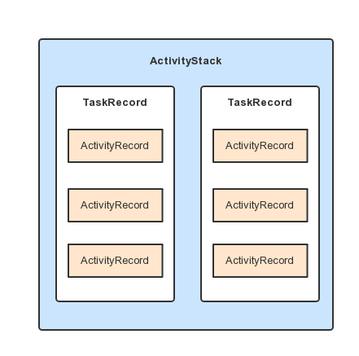

【Android笔记】Activity 的创建过程
概述

上图为 Activity 在 Android-7.x 下的创建流程，图中所画涉及了两个进程中数个对象间的协作（之前的版本可能没有 ActivityStart 对象）。客户端进程为 Activity 所在的 app 进程，服务端进程为系统进程，客户端进程和服务端进程都通过 Binder 对象和对方通信。创建过程中的比较重要的对象及其职责：
- Instrumentation：监控应用与系统进程的交互和 Activity 的创建及其生命周期的执行，Activity 的生命周期方法需通过 Instrumentation 来进行调用，并且每个 Activity 中都有 Instrumentation 的引用，一个应用只有一个 Instrumentation。
- ActivityThread：定义了
main()函数，应用程序的入口，代表着主线程，负责和 ActiviyManagerService 进行交互，并对 Activity 进行调度等工作。与 Instrumentation 的区别是：ActivityThread 通知 Instrumentation，而 Instrmentation 负责具体的执行。 - ActivityManagerService：负责 Activity（其实是四大组件）的创建、管理和调度等工作，运行在系统进程中。
- ActivityRecord：代表一个 Activity，包含有 Activity 的各中信息，存放在 TaskRecord 栈中。
- TaskRecord：即通常所说的 Activity 任务栈，内维护这一个
ArrayList管理 ActivityRecord。 - ActivityStack：维护和管理 Activity 的状态。
- ActivityStackedSupervisor：内有多ActivityStack（
mHomeStack,mFocusedStack,mLastFocusedStack)，是比 ActivityStack 高一级的决策者。
上面三者的关系可表示成（图片来源：http://liuwangshu.cn/framework/ams/2-activitytask.html ）：

创建流程
Activity 的启动从 ContextWrapper（Activity） 的 startActivity() 或者 startActivityForResult() 开始，然后交由 Instrumentation 对象去执行，显示执行 execStartActivities() ，再加上进程的 UserId 调用自身的 execStartActivitiesAsUser()：
public void execStartActivitiesAsUser(Context who, IBinder contextThread,
IBinder token, Activity target, Intent[] intents, Bundle options,
int userId) {
...
//这里将调用的是 ActivityManagerProxy.startActivities()
int result = ActivityManagerNative.getDefault()
.startActivities(whoThread, who.getBasePackageName(), intents, resolvedTypes,
token, options, userId);
...
}
static public IActivityManager getDefault() {
return gDefault.get();
}
private static final Singleton<IActivityManager> gDefault = new Singleton<IActivityManager>() {
protected IActivityManager create() {
IBinder b = ServiceManager.getService("activity");
if (false) {
Log.v("ActivityManager", "default service binder = " + b);
}
IActivityManager am = asInterface(b);
if (false) {
Log.v("ActivityManager", "default service = " + am);
}
return am;
}
};
static public IActivityManager asInterface(IBinder obj) {
if (obj == null) {
return null;
}
IActivityManager in =
(IActivityManager)obj.queryLocalInterface(descriptor);
if (in != null) {
return in;
}
//返回 ActivityManagerService 在客户端的代理 ActivityManagerProxy
return new ActivityManagerProxy(obj);
}

ActivityManagerNative（AMN）和 AMS 都是 Binder 对象，而 gDefault 是一个单例模式的泛型封装类，类中代码 ServiceManager.getService("activity") 得到的是 AMS 在客户端的代理 ActivityManagerProxy 对象，也就是说创建流程执行到这儿后交给了系统进程的 AMS 对象去执行。
AMS 收到客户端的请求之后，先后调用自身的 startActivity() 和 startActivityAsUser() 方法，在后一个方法中流程传到了 ActivityStarter 对象当中。

ActivityStarter 对象先后调用了 startActivityMayWait()、startActivityLocked() 和 startActivityUnchecked() 三个方法，这三个方法做的事大概是：从 Intent 和 其他对象中提取 Activity 的相关信息，然后生成 ActivityRecord 对象和 TaskRecord 对象，最后交给 ActivityStackedSupervisor 对象执行。

ActivityStackedSupervisor 和 ActivityStack 间有比较繁琐的调用过程，如上图，分别先后调用的方法如下：
- ActivityStackedSupervisor：
resumeFocusedStackTopActivityLocked()、resumeTopActivityUncheckedLocked()、startSpecificActivityLocked()、realStartActivityLocked()
- ActivityStack ：
resumeTopActivityUncheckedLocked()、resumeTopActivityInnerLocked()
总的来说这两者是对 Activity 任务栈 和 Activity 进行了管理，最后调用的方法 realStartActivityLocked() 执行了：
final boolean realStartActivityLocked(ActivityRecord r, ProcessRecord app,
boolean andResume, boolean checkConfig) throws RemoteException {
...
app.thread.scheduleLaunchActivity(new Intent(r.intent), r.appToken, System.identityHashCode(r), r.info, new Configuration(mService.mConfiguration), new Configuration(task.mOverrideConfig), r.compat, r.launchedFromPackage, task.voiceInteractor, app.repProcState, r.icicle, r.persistentState, results, newIntents, !andResume, mService.isNextTransitionForward(), profilerInfo);
...
}
app.thread 是一个 IApplicationThread 对象，而 IApplicationThread 继承了跨进程通用接口 IInterface，它的实现类是 ApplicationThreadNative，ApplicationThreadNative 还继承了 Binder，可见，当服务端执行结束之后返回给客户端时使用的也是 Binder。继承关系如下：

ApplicationThread 继承了 ApplicationThreadNative，ApplicationThread 是 ActivityThread 中的一个内部类，所以说最终的调用流程是回到了 ActivityThread 对象中：
public final void scheduleLaunchActivity(Intent intent, IBinder token, int ident,
ActivityInfo info, Configuration curConfig, Configuration overrideConfig,
CompatibilityInfo compatInfo, String referrer, IVoiceInteractor voiceInteractor,
int procState, Bundle state, PersistableBundle persistentState,
List<ResultInfo> pendingResults, List<ReferrerIntent> pendingNewIntents,
boolean notResumed, boolean isForward, ProfilerInfo profilerInfo) {
...
sendMessage(H.LAUNCH_ACTIVITY, r);
...
}
...
public void handleMessage(Message msg) {
if (DEBUG_MESSAGES) Slog.v(TAG, ">>> handling: " + codeToString(msg.what));
switch (msg.what) {
case LAUNCH_ACTIVITY: {
Trace.traceBegin(Trace.TRACE_TAG_ACTIVITY_MANAGER, "activityStart");
final ActivityClientRecord r = (ActivityClientRecord) msg.obj;
r.packageInfo = getPackageInfoNoCheck(
r.activityInfo.applicationInfo, r.compatInfo);
handleLaunchActivity(r, null, "LAUNCH_ACTIVITY");
Trace.traceEnd(Trace.TRACE_TAG_ACTIVITY_MANAGER);
} break;
case RELAUNCH_ACTIVITY: {
Trace.traceBegin(Trace.TRACE_TAG_ACTIVITY_MANAGER, "activityRestart");
ActivityClientRecord r = (ActivityClientRecord)msg.obj;
handleRelaunchActivity(r);
Trace.traceEnd(Trace.TRACE_TAG_ACTIVITY_MANAGER);
} break;
case PAUSE_ACTIVITY: {
Trace.traceBegin(Trace.TRACE_TAG_ACTIVITY_MANAGER, "activityPause");
SomeArgs args = (SomeArgs) msg.obj;
handlePauseActivity((IBinder) args.arg1, false,
(args.argi1 & USER_LEAVING) != 0, args.argi2,
(args.argi1 & DONT_REPORT) != 0, args.argi3);
maybeSnapshot();
Trace.traceEnd(Trace.TRACE_TAG_ACTIVITY_MANAGER);
} break;
...
//后面还有很多 case
}
切换到客户端进程以后，在 ApplicationThread 的 scheduleLaunchActivity() 中先是把服务端返回的信息封装成 ActivityClientRecord，由于是运行在 Binder 线程池中的线程，所以使用了 Handler 切换到主线程去执行，然后在主线程中：
private void handleLaunchActivity(ActivityClientRecord r, Intent customIntent, String reason) {
Activity a = performLaunchActivity(r, customIntent);
}
执行了 ActivityThread 的 performLaunchActivity()，完成 Activity 的创建。
private Activity performLaunchActivity(ActivityClientRecord r, Intent customIntent) {
...
//1 创建 Activity 对象
activity = mInstrumentation.newActivity( cl, component.getClassName(), r.intent);
//2 创建 Application 对象
Application app = r.packageInfo.makeApplication(false, mInstrumentation);
activity.attach(appContext, this, getInstrumentation(), r.token,
r.ident, app, r.intent, r.activityInfo, title, r.parent,
r.embeddedID, r.lastNonConfigurationInstances, config,
r.referrer, r.voiceInteractor, window);
//3 创建上下文, Window 等
Context appContext = createBaseContextForActivity(r, activity);
activity.attach(appContext, this, getInstrumentation(), r.token,
r.ident, app, r.intent, r.activityInfo, title, r.parent,
r.embeddedID, r.lastNonConfigurationInstances, config,
r.referrer, r.voiceInteractor, window);
//4 调用 Actvity 对象的 onCreate()
if (r.isPersistable()) {
mInstrumentation.callActivityOnCreate(activity, r.state, r.persistentState);
} else {
mInstrumentation.callActivityOnCreate(activity, r.state);
}
}
//这是 Instrumentation 的方法，通过此方法创建 Activity
public Activity newActivity(ClassLoader cl, String className,
Intent intent)
throws InstantiationException, IllegalAccessException,
ClassNotFoundException {
return (Activity)cl.loadClass(className).newInstance();
}